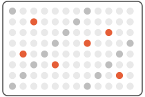
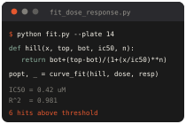
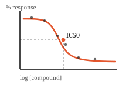

Away From Keyboard
Nothing on this screen moves while you are here.
8 classes. 2 midterms this week. 0 progress.
- islamic civ midterm (wed)
- lab 08 midterm
- bad boys ch 4
- @themainquest drafts
- the group chat



brb
after finals after the summer after graduation after finals after the summerthe main quest is the part you keep postponing
A screensaver only exists when nobody is looking. Hover the switch, then click it.